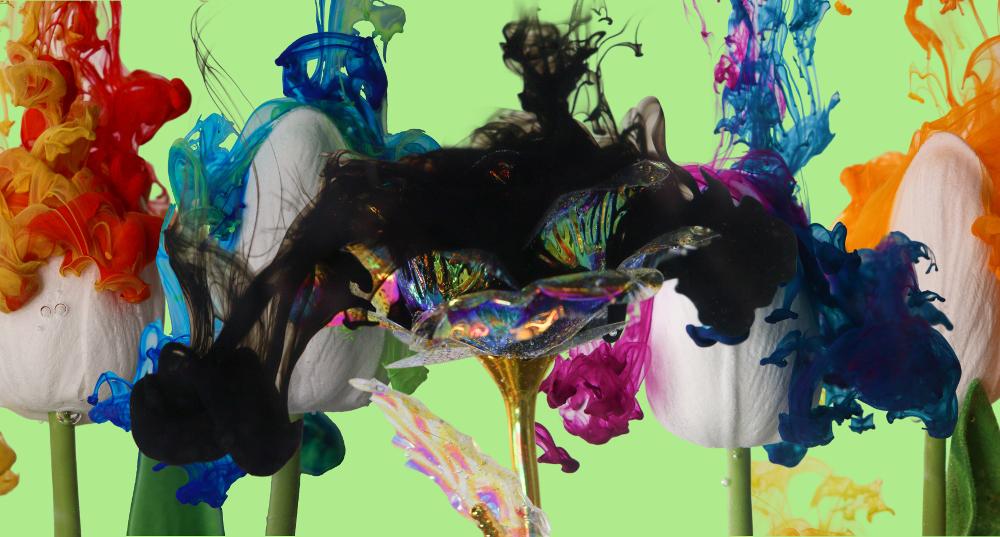
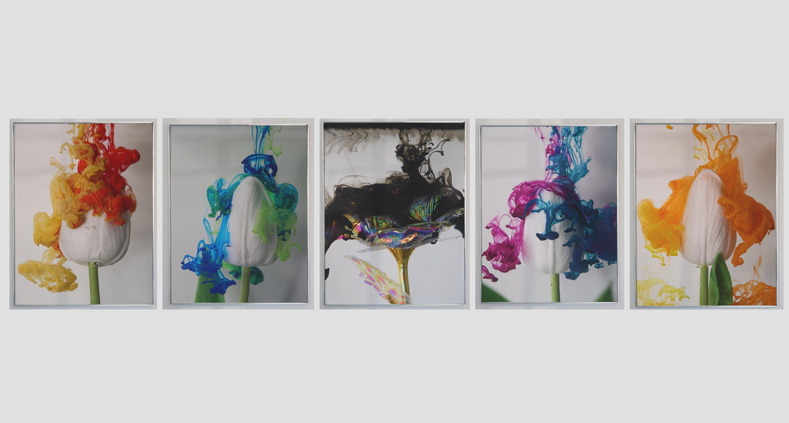

Creation
This was a high school art piece that was done in 2025! The pictures that were taken were 2 different kinds of flowers, and 5 different shots.
This piece was inspired for the annual art show that happens at the end of the year! The theme for the art show was "Flow", which related a lot to the Fraser River and how affects people in Lower Mainland.
This is a piece "Saturated by Despair; Polluted Petals" respresents the pollution in our oceans and how it affects the enviornment around us. The flowers respresent the beauty of the enviornment that we live in, and the colours (aryclic ink) respresents the pollution that affects our enviornment, but also i wanted to create a fun moment into as well!

My Role
Photography
Writer
Creator
Team
Independent project
Timeline
12 weeks
Tools
Photoshop
Camera